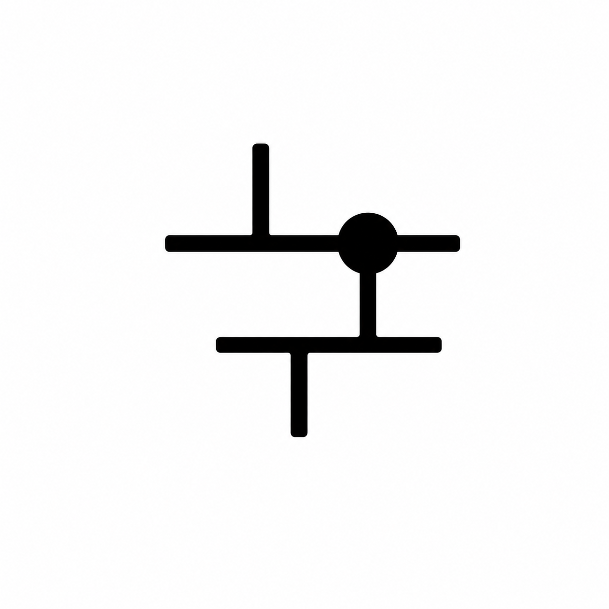
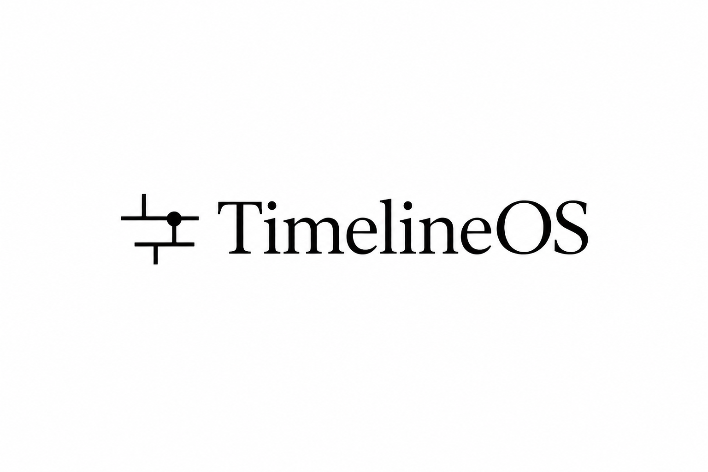

A small internet space by Satya to save projects, random wins, experiments, failures, and moments that actually mattered.
TimelineOS is basically my internet memory system. A place where I can save progress, projects, lessons, random experiments, and things I don't want to forget later.
I wanted the website to feel clean and creative without looking too corporate or overdesigned.
Hopefully after a few years this turns into a real archive of growth instead of just another abandoned project.
I'm still learning most of this stuff while building the site. That's kind of the point of TimelineOS honestly.
Not just syntax, but real problem solving and systems thinking.
Projects, tools, experiments, games, and systems that slowly improve over time.
Every month becomes part of the archive instead of disappearing from memory.